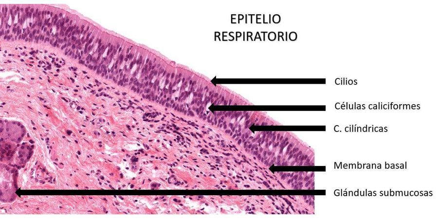
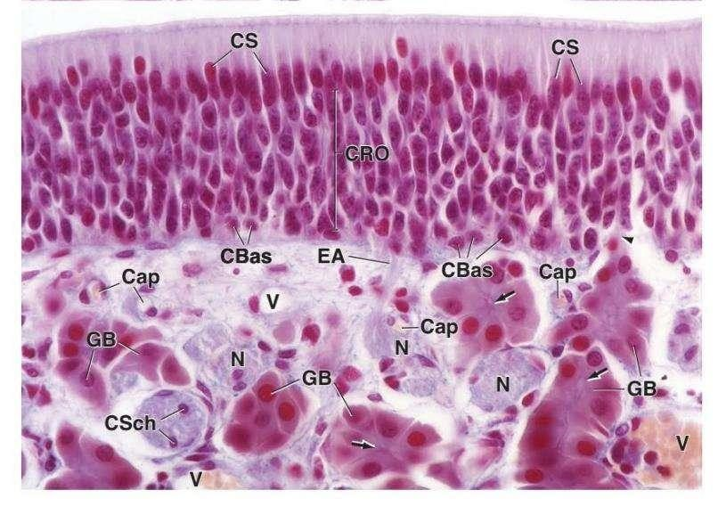
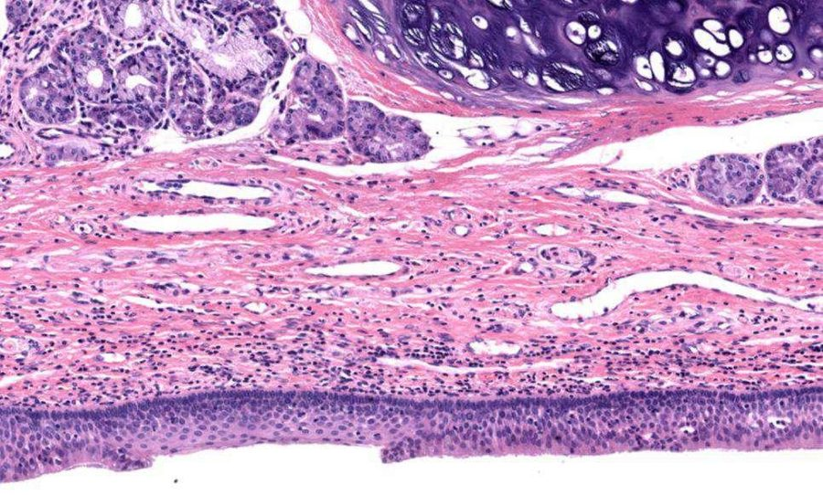
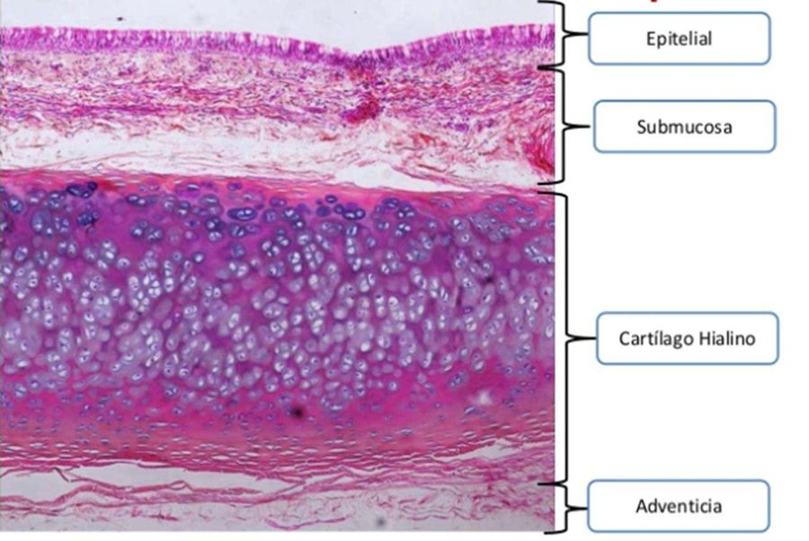
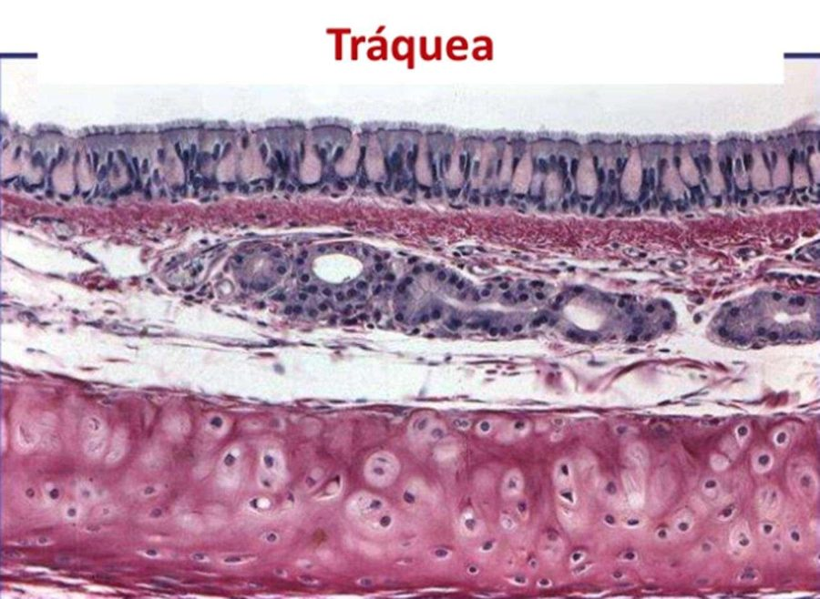
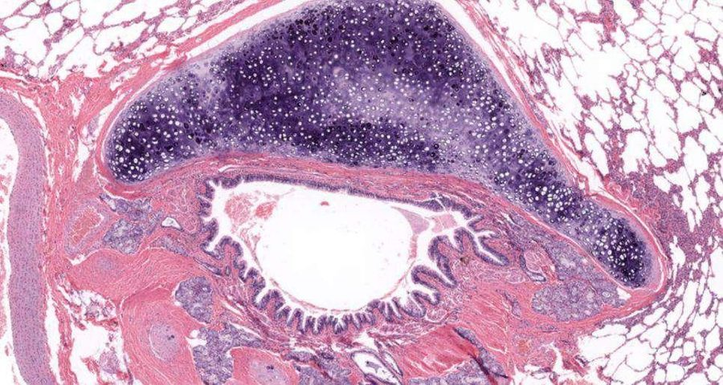
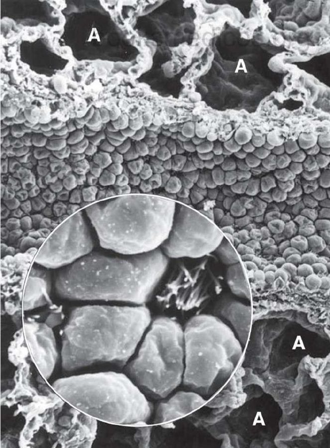
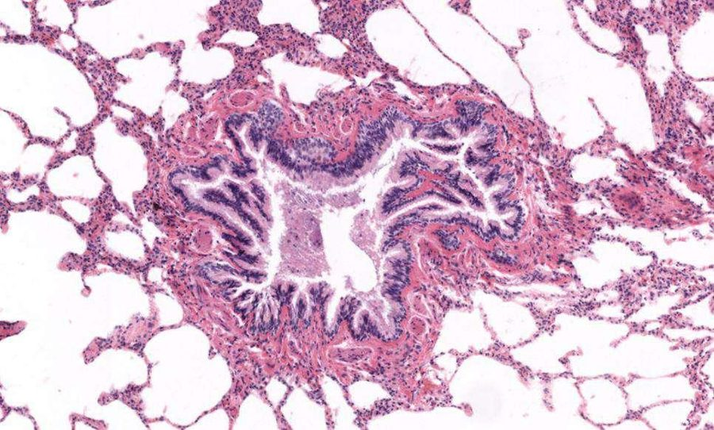
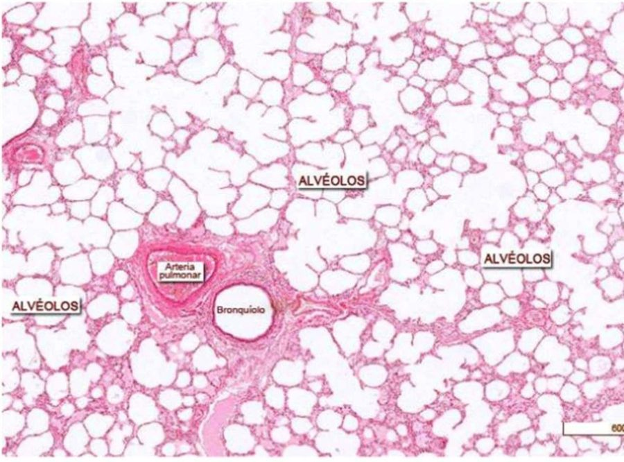
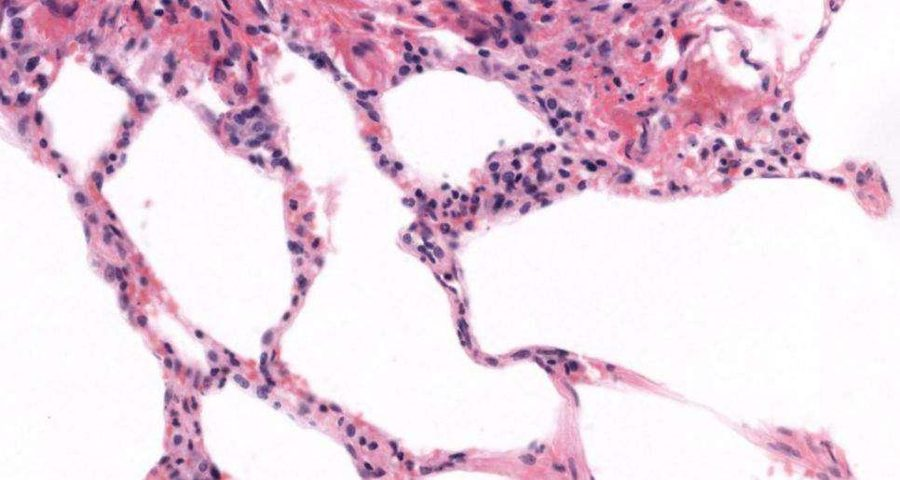

ClinicusMed · Dossiê Clinicus — Padrão de Excelência
| Porção | Função | Estruturas |
|---|---|---|
| Condutora | Leva o ar até os pulmões, prepara (aquece/umidifica/filtra) | Cavidade nasal → faringe → laringe → traqueia → brônquios → bronquíolos terminais |
| Respiratória | Onde ocorre a troca gasosa | Bronquíolos respiratórios → ductos alveolares → sacos alveolares → alvéolos |

| Região | Característica |
|---|---|
| Vestíbulo Nasal | Contém fibrissas (pelos terminais) que filtram partículas maiores + pele |
| Região Respiratória | Mucosa respiratória — Epitélio Respiratório (pseudoestratificado colunar ciliado + células caliciformes) + Lâmina Própria |
| Região Olfatória | Epitélio Olfatório, com neurônios bipolares (olfato) + Lâmina Própria |
| Seios Paranasais | Revestidos por epitélio respiratório. Auxiliam na ressonância da voz + produzem óxido nítrico (NO), importante na defesa contra microrganismos |

| Tipo Celular | Proporção | Função |
|---|---|---|
| Células Ciliadas | ≈70% | Movem o muco em direção à faringe (limpeza do ar) |
| Células Caliciformes | 5-15% | Secretam muco |
| Células Cepillo (Escova) | — | Microvilosidades, função SENSORIAL |
| Células de Grânulos Pequenos (Kulchitsky) | — | Função ENDÓCRINA |
| Células Basais | — | Células MADRE (tronco), regenerativas |
Lâmina Própria: Tecido Conjuntivo Laxo.

| Tipo Celular | Função |
|---|---|
| Células Receptoras de Olfato | Neurônios BIPOLARES |
| Células de Sustentação | Colunar, com microvilosidades — suporte físico e metabólico |
| Células Basais | Progenitoras de neurônios olfatórios |
| Células Cepillo (Escova) | Função sensorial acessória |

| Túnica | Detalhe |
|---|---|
| Mucosa — Epitélio | Respiratório: plano estratificado NÃO queratinizado |
| Lâmina Própria | Tecido Conectivo Laxo |
| Capa Cartilaginosa | Cartilagem Hialina; Epiglote (cartilagem ELÁSTICA) — na Laringe |
| Cordas Vocais | Composição |
|---|---|
| Falsas | T.C. Laxo (NÃO é músculo) |
| Verdadeiras | Músculo estriado esquelético (músculo vocal) |


| Túnica | Composição |
|---|---|
| Mucosa | Epitélio Respiratório + Lâmina Própria (T.C. Laxo) |
| Submucosa | T.C. Denso Irregular + Glândulas Traqueais |
| Capa Cartilaginosa | Hialina — cartilagens INCOMPLETAS (formato de "C") |
| Adventícia (Externa) | T.C. Laxo com vasos sanguíneos + tecido adiposo |

| Túnica | Composição |
|---|---|
| Mucosa | Igual à da traqueia |
| Muscular | Fibras musculares lisas (NOVA camada, ausente na traqueia) |
| Submucosa | Glândulas Bronquiais |
| Capa Cartilaginosa | Hialina — placas DESCONTÍNUAS ("ilhotes") |
| Adventícia | Igual à da traqueia |


| Tipo Celular | Proporção (células) | Proporção (superfície) | Função |
|---|---|---|---|
| Pneumócitos Tipo I | ≈40% | ≈75% | Células aplanadas — permitem intercâmbio de gases |
| Pneumócitos Tipo II | ≈60% | — | Produzem SURFACTANTE |
| Macrófagos Alveolares | — | — | "Células de Poeira" (Polvo) — multinucleadas e grandes |

| Etapa | Processo |
|---|---|
| 1 | Ar inspirado chega aos alvéolos, rico em O₂ |
| 2 | O₂ difunde-se do ar alveolar pro sangue dos capilares |
| 3 | CO₂ (maior concentração no sangue venoso) difunde-se do sangue pro alvéolo, sendo eliminado na expiração |
Vamos acompanhar um recém-nascido prematuro com dificuldade respiratória, relacionando o caso à histologia dos pneumócitos e do surfactante. O caso evolui em 3 níveis — clica em cada um pra ver como as coisas vão se desenrolando.
A Clinicus selecionou este conteúdo para complementar seu estudo. Não substitui a leitura do resumo — o resumo ensina, o vídeo reforça.
Carregando recomendações...
O sistema guarda, no seu navegador, quais cards você já sabe bem e quais precisam voltar mais cedo — cada vez que você avalia um card, ele recalcula quando ele deve voltar.
10 questões, do mais básico ao mais puxado. Escolhe uma alternativa, depois clica em "Ver comentário completo" — vale a pena ler até quando você acerta, porque o comentário explica cada alternativa, não só a certa.
Todas as imagens desse capítulo, reunidas num só lugar pra revisão rápida.